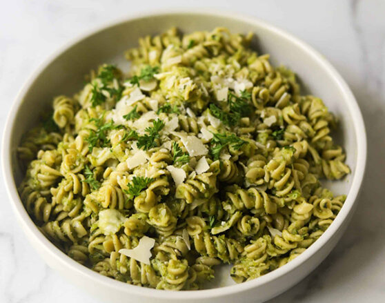

Broccoli Pesto Pasta

If you’re looking for the world’s brightest and most flavorful pasta salad – you’ve found it!
Ingredients
- 8-ounces pasta
- 4–5 cups broccoli florets, cooked and cooled
- Zest and juice of ½ medium lemon
- ¼ cup fresh basil leaves
- ¼ cup fresh Parmesan cheese
- ¼ cup nuts (pine, walnuts, almonds, pepitas)
- 3–4 cloves garlic, peeled
- ½ teaspoon coarse salt
- ¼ teaspoon ground black pepper
- ½ cup pine nuts (optional)
- ¼ cup chopped fresh herbs (basil, parsley)
Steps
- Bring a medium pot of salted water to a boil. Add pasta and cook according to package directions. Let pasta cool.
- Place cooked broccoli, lemon zest and juice, basil leaves,
Parmesan cheese, nuts, garlic, salt and black pepper in the
bowl of a food processor. Process on low while drizzling olive
oil in through the vegetable shoot until desired consistency
is reached, scraping the sides of the bowl as needed. Taste and
adjust seasoning, if necessary. Place in the refrigerator until
ready to use (while pasta cools or if making ahead).
- Toss broccoli pesto with cooked pasta until thoroughly combined and
transfer to a serving bowl.
Top with pine nuts (if using) and fresh herbs. Serve.
Go Home